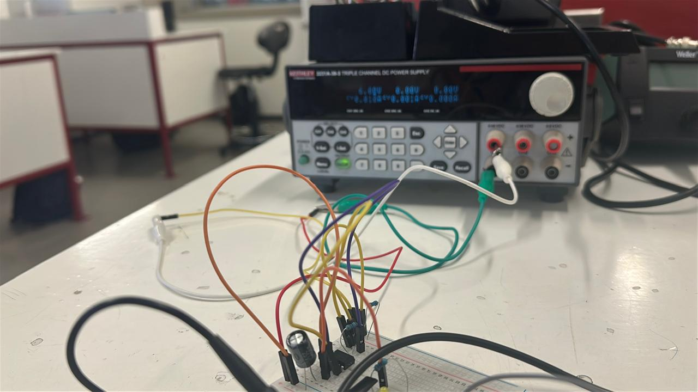
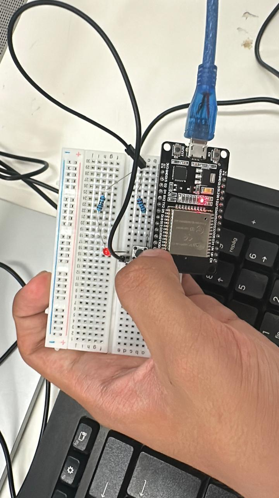
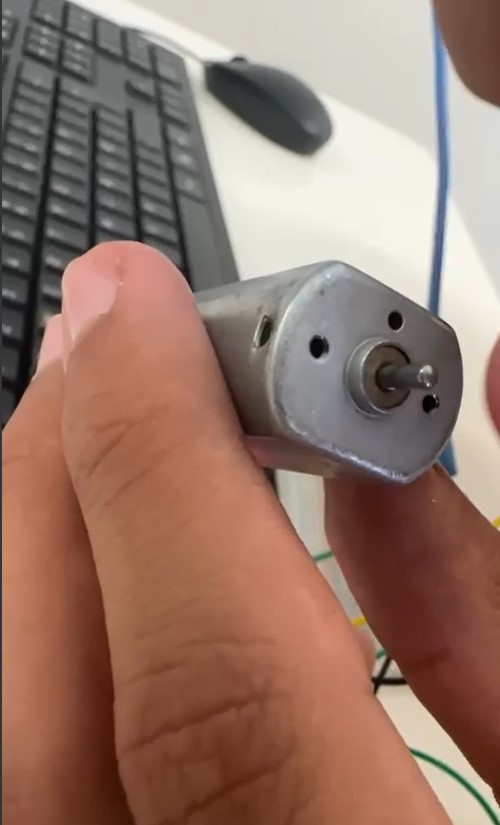
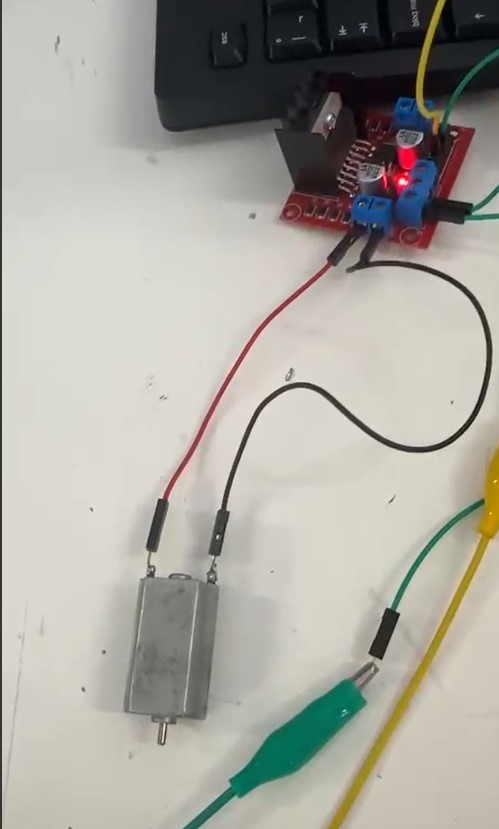

Documentación, Practicas
Nombre de la practica: Funcionamiento y uso de la compuerta 74ls555
Autores
Garcia Elvira Pedro Emmanuel
Barriga Gómez Diego
Fecha: 5 de Septiembre del 2025
Asignatura: Introducción a la Mecatronica
Práctica con el Temporizador 555
Introducción
En esta práctica de la materia "Introducción a la Mecatrónica", se trabajó con el integrado 555, un componente que permite activar o desactivar funciones dentro de un circuito durante un tiempo determinado.
Este intervalo puede modificarse ajustando los valores de las resistencias y capacitores empleados en el diseño.
Objetivo de la práctica
El propósito fue lograr que un LED se encendiera durante un periodo de 3 a 5 segundos y permaneciera apagado durante el mismo intervalo de tiempo.
De esta forma, se buscó comprender cómo el 555 puede controlar la frecuencia de parpadeo en función de los componentes conectados.
Uso de capacitores
Durante la clase se enfatizó en el uso de los capacitores, ya que el tema principal era analizar sus funciones y aplicaciones dentro de un circuito temporizador.
Los capacitores se utilizaron para almacenar y liberar energía, permitiendo modificar los tiempos de encendido y apagado del LED.
Cálculos de resistencia
Se nos proporcionó una calculadora de componentes, la cual permitía ingresar los valores de dos resistencias y un capacitor.
Una de las resistencias controlaba el tiempo de encendido, mientras que la otra regulaba el tiempo de apagado del LED.
Además, la calculadora mostraba el diagrama de conexión de los pines del 555 hacia la protoboard, lo que facilitó seguir correctamente el esquema del circuito.
Componentes utilizados
En el caso de nuestro equipo, seleccionamos los siguientes valores:
- Resistencia 1: 1 kΩ
- Resistencia 2: 20 kΩ
- Capacitor: 330 µF
Estos componentes permitieron obtener el comportamiento deseado del circuito, con un parpadeo del LED dentro del rango de 3 a 5 segundos para cada ciclo.
Conclusión
Gracias a esta práctica comprendimos mejor cómo las resistencias y los capacitores influyen en el tiempo de respuesta de un circuito con el temporizador 555.
Además, reforzamos la habilidad para interpretar y armar circuitos basados en diagramas electrónicos.



Pagina (https://www.digikey.com.mx/es/resources/conversion-calculators/conversion-calculator-555-timer?srsltid=AfmBOopExlAJ0hL2w6AKdoyEliUHPJePR_9zs5x8V6Y6rbOffRCSPgXM)
Nombre de la practica: Funcionamiento y uso del microcontrolador ESP32
Autores
Garcia Elvira Pedro Emmanuel
Barriga Gómez Diego
Fecha: 12 de Septiembre del 2025
Descripción
En esta práctica se trabajó con diversos componentes electrónicos —entre ellos el ESP32, jumpers y una protoboard— con el objetivo de implementar un circuito capaz de encender y apagar un diodo LED mediante la programación del microcontrolador ESP32 desde un entorno computacional.
Objetivos
General
En esta segunda practica de la asignatura "Introducción a la Mecatrónica", se buscó diseñar e implementar un circuito controlado por un ESP32, programado para activar y desactivar un LED de acuerdo con las instrucciones definidas en el código desarrollado durante la sesión.
Específicos
- Objetivo 1: Superar el desempeño obtenido en la primera practica, consolidando los conocimientos adquiridos y aplicándolos de manera más eficiente.
- Objetivo 2: Profundizar en la comprensión del funcionamiento del ESP32, así como en la lógica de control digital mediante programación estructurada.
- Objetivo 3: Fortalecer las habilidades en el ensamblaje de circuitos electrónicos y la implementación de retardos temporales (delay) dentro de un programa.
Alcance y Exclusiones
- Incluye:
- Los códigos fuente empleados para la ejecución de cada circuito.
- Evidencias fotográficas de las conexiones realizadas en la protoboard.
Procedimiento 1
- Revisión de materiales: Se verificó la disponibilidad y correcto funcionamiento de los componentes electrónicos requeridos para la práctica.
- Configuración inicial: Se realizó una breve introducción al uso del microcontrolador ESP32, abordando su conexión con la computadora y su programación mediante un entorno de desarrollo compatible.
- Diseño del circuito: Se implementó un circuito básico en la protoboard, conectando un LED a uno de los pines digitales de salida del ESP32, junto con la resistencia correspondiente para limitar la corriente.
- Programación: Se desarrolló un script en lenguaje C/C++, el cual controla el encendido y apagado del LED utilizando la función
delay()para generar intervalos de tiempo visibles entre ambos estados. - Ejecución y verificación: Finalmente, se cargó el programa al ESP32 y se comprobó su correcto funcionamiento, verificando que el LED alternara su estado de encendido y apagado de acuerdo con el código implementado.
Codigo
const int led = 33; // Puerto del ESP32 al que está conectado el LED
void setup() {
Serial.begin(115200);
pinMode(led, OUTPUT);
}
void loop() { // Repetición constante del encendido y apagado
digitalWrite(led, 1); // Encendido
delay(1000); // Retraso del encendido y apagado del LED
digitalWrite(led, 0); // Apagado
delay(1000);
}
const int led = 33; // Puerto del ESP32 al que está conectado el LED
void setup() {
Serial.begin(115200);
pinMode(led, OUTPUT);
}
void loop() { // Repetición constante del encendido y apagado
digitalWrite(led, 1); // Encendido
delay(1000); // Retraso del encendido y apagado del LED
digitalWrite(led, 0); // Apagado
delay(1000);
}
Procedimiento 2
Partiendo del código y circuito desarrollados en la primera práctica, se realizaron modificaciones tanto en el hardware como en el software.
En esta ocasión, se añadió un botón pulsador al circuito con el propósito de controlar manualmente el encendido y apagado del LED al presionarlo.
El botón se conectó al pin 34 del ESP32, configurado como entrada digital.
Para implementar esta nueva funcionalidad, se declaró una nueva constante en el código correspondiente al pin del botón, y se agregaron estructuras condicionales que permiten determinar el estado del LED en función de la lectura del pulsador:
- Cuando el botón es presionado, el LED se enciende.
- Cuando el botón no está presionado, el LED permanece apagado.
Estas modificaciones permitieron ampliar el control del sistema, pasando de un funcionamiento automático a uno interactivo, donde la acción del usuario influye directamente en el comportamiento del circuito.
const int led=33; // LED
const int btn=34; // BOTON
void setup() {
Serial.begin(115200);
pinMode(led, OUTPUT); // SALIDA
pinMode(btn, INPUT); // ENTRADA
}
void loop() {
int estado = digitalRead(btn);
if(estado == 1){
digitalWrite(led,1); // PRENDIDO
}
else {
digitalWrite(led,0); // APAGADO
}
}
Procedimiento 3
Para este tercer ejercicio se utilizó la aplicación "Serial Bluetooth Terminal", la cual permite comunicarse con el ESP32 vía Bluetooth. Mediante la terminal de la aplicación, se pueden enviar señales al microcontrolador para controlar el encendido y apagado del LED de acuerdo con el código programado.
Partiendo del código desarrollado en el Procedimiento 2, se realizaron las siguientes modificaciones:
- Se añadió la librería
#include "BluetoothSerial.h"para habilitar la comunicación Bluetooth en el ESP32. - Se eliminó la constante y configuración del botón físico, reemplazando la entrada por la conexión Bluetooth, que se denominó LR23 en el código.
- Las estructuras condicionales fueron adaptadas para funcionar con la aplicación:
- Si la terminal envía el mensaje
"Prende", el LED se enciende. - Si se recibe cualquier otro mensaje, el LED permanece apagado o se apaga.
Estas modificaciones permitieron controlar el LED de manera remota mediante Bluetooth, demostrando cómo integrar comunicaciones inalámbricas con sistemas embebidos.
"#"include "BluetoothSerial.h"
BluetoothSerial SerialBT;
const int led=33;
void setup() {
Serial.begin(115200);
SerialBT.begin("LR23"); // Dipositivo bluetooth
pinMode(led, OUTPUT);
}
void loop() {
if(SerialBT.available()){
String mensaje = SerialBT.readString();
Serial.println("Recibido: " + mensaje);
if(mensaje == "Prende"){
digitalWrite(led,1);
}
else {
digitalWrite(led,0);
}
}
delay(100);
}
Conclusión
La práctica permitió fortalecer la comprensión sobre la interacción entre hardware y software en sistemas embebidos, aplicando distintos métodos de control de un LED utilizando el ESP32.
En el Procedimiento 1, se desarrolló un circuito básico con encendido y apagado automático mediante retardos temporales, lo que reforzó la comprensión del control temporal en programación.
En el Procedimiento 2, se integró un botón físico como entrada digital, permitiendo el control manual del LED mediante estructuras condicionales, lo que amplió la experiencia en interacción hardware-software y en la gestión de entradas digitales.
Finalmente, en el Procedimiento 3, se implementó comunicación inalámbrica vía Bluetooth utilizando la librería BluetoothSerial.h, logrando controlar el LED de manera remota desde una aplicación móvil, lo que permitió explorar la integración de sistemas embebidos con comunicaciones inalámbricas.
En conjunto, estas prácticas consolidaron conocimientos en configuración del ESP32, control de salidas digitales, gestión de entradas y condicionales, así como en la interfaz con dispositivos externos mediante Bluetooth.

Nombre de la practica: Uso de motor PWM con microcontrolador ESP32
Autores
Garcia Elvira Pedro Emmanuel
Barriga Gómez Diego
Fecha: 19 de Septiembre del 2025
Descripción
En esta tercer practica de la materia Introducción a la Mecatrónica, nuestro objetivo fue realizar la conexión y programación de un motor DC para controlar su encendido, apagado y velocidad utilizando un ESP32.
Se emplearon los pines digitales y la función ledcWrite() para variar la velocidad del motor mediante la técnica de modulación por ancho de pulso (PWM).
Objetivos
General
Aprender a controlar un motor DC utilizando un microcontrolador, comprendiendo el funcionamiento de los pines de salida y el control de velocidad mediante PWM.
Específicos
- Programar el encendido y cambio de giro del motor.
- Implementar el control de velocidad utilizando la función
ledcWrite(). - Comprender la relación entre frecuencia, ciclo de trabajo y velocidad del motor.
Alcance y Exclusiones
- Incluye:
- Conexión del motor DC a través del driver y pines de salida del ESP32.
- Código para encendido, apagado y cambio de giro del motor.
-
Código con control progresivo de velocidad mediante PWM.
-
No incluye:
- Otros tipos de motores o controladores distintos al motor DC y driver utilizados.
Procedimiento
- Se identificaron los pines de salida del microcontrolador y se realizaron las conexiones correspondientes del motor DC mediante el driver.
- Una vez conectado, se desarrolló un código básico que permitiera:
- Encender el motor en una dirección.
- Detenerlo después de un intervalo de 3 segundos.
- Cambiar su giro en sentido contrario, manteniendo los mismos intervalos de tiempo.
Este procedimiento permitió verificar la correcta integración de hardware y software para controlar el motor DC y sentar las bases para implementar control de velocidad posteriormente.
Anexando a continuación el primer código utilizado :
Control Progresivo de Velocidad del Motor
Como segunda parte de este proyecto, y tomando como base lo realizado previamente, se programó el motor DC de manera que fuera posible controlar su velocidad de forma gradual.
El objetivo fue que el motor aumentara y disminuyera progresivamente su velocidad, en lugar de detenerse o arrancar de manera abrupta.
Esto es importante porque, aplicado a un motor real, un arranque o paro repentino podría generar pérdida de control o incluso un desgaste innecesario en el mecanismo.
A continuación, se presenta el segundo código utilizado para implementar esta funcionalidad en el proyecto:
pinMode(in1, OUTPUT);
pinMode(in2, OUTPUT);
//Control de velocidad
ledcAttachChannel(pwm,1000,8,0); //pin,frecuencia,bits,canal //config
}
void loop() {
for(vel=0; vel<=256;vel++){
ledcWrite(pwm,vel);
digitalWrite(in1,1);
digitalWrite(in2,0);
delay(10);
}
for(vel=256;vel>=0;vel--){
digitalWrite(in1,1);
digitalWrite(in2,0);
delay(10);
}
}
Conclusión
La practica 3 permitió profundizar en el control de motores DC mediante un ESP32, combinando tanto la parte de encendido/apagado y cambio de giro, como el control progresivo de velocidad.
En la primera fase, se logró comprender la relación entre los pines digitales, la lógica de control y la implementación de intervalos temporales para encender y apagar el motor de manera controlada.
En la segunda fase, se incorporó el control gradual de velocidad mediante la técnica de modulación por ancho de pulso (PWM) utilizando la función ledcWrite(). Esto permitió evitar arranques y paros bruscos, lo cual es fundamental para proteger el motor y el mecanismo acoplado, además de ofrecer un comportamiento más realista y seguro del sistema.
En conjunto, el proyecto consolidó conocimientos sobre:
- Programación de microcontroladores para control de actuadores.
- Uso de PWM para control de velocidad de motores.
- Integración de hardware y software para aplicaciones de mecatrónica.
- Importancia de implementar estrategias de control progresivo para proteger los componentes y mejorar la eficiencia del sistema.
- 
- 